Pathology of the Breast
- One diagram organises the whole lecture. Lesions are named by where they arise: TDLU → fibrocystic change, in situ and invasive carcinoma · large ducts / nipple → papillomas, duct ectasia, mastitis, Paget's · intralobular stroma → fibroadenoma, phyllodes · interlobular stroma → fat necrosis.
- In situ vs invasive is one question: is the myoepithelial layer and basement membrane still intact? Intact → in situ. Broken through → invasive.
- Benign epithelial lesions carry three tiers of risk: non-proliferative RR ×1 · proliferative without atypia ×1.5–2 · atypical hyperplasia ×4–5 (and ×9–10 with a family history).
- DCIS is a precursor → excise with negative margins. LCIS is a risk marker → close follow-up — and the risk it marks is in both breasts.
- 80% of invasive cancers are "no special type". Pure special types generally do better — except metaplastic (worse) and lobular.
- Inflammatory carcinoma is a clinical diagnosis. It needs the look of diffuse acute mastitis. Dermal lymphatic tumour without that appearance is not inflammatory carcinoma, and peau d'orange alone isn't either.
- ER/PR positive = good prognosis and predicts endocrine therapy. HER2 positive = bad prognosis but predicts trastuzumab. Prognostic and predictive are not the same thing.
- Breast Pathology Basics — anatomy & benign lesions ▶9:27
- Clinical Pathway to Pathology — breast cancer ▶9:28
Learning Objectives
- Present an anatomical / histological framework for classifying benign and malignant breast lesions.
- ∗ Describe the presentation, pathological features and clinical relevance of selected benign breast lesions.
- ∗ For breast cancer: list risk factors for its development; outline its pathological classification; list important prognostic and predictive information.
Dr. Zeeman-Pocrnich says it outright in the first minute: "I think exam questions are going to be particularly derived from the asterisked bullets." Those are the two marked above — the benign lesions, and everything about breast cancer. The anatomy that opens the lecture is scaffolding for those two, and she flags one slide explicitly as "not exam material."
Dr. Cady Zeeman-Pocrnich, 45 minutes in three parts. MCC presentations covered: Breast Disorders [10], Breast Discharge [10-2], Breast Masses and Enlargement [10-1]. The clinical counterpart is 5.7.
Anatomy, Histology and the Framework
Learn this first and the rest of the lecture stops being a list.
The Organising Diagram
The breast is a modified sweat gland. Its functional units are the terminal duct–lobular units (TDLUs). Multiple TDLUs empty into a lactiferous duct; those ducts coalesce and widen as they approach the nipple, form the lactiferous sinuses, and terminate at the nipple.
Each TDLU is wrapped in a specialised intralobular stroma. Everything else — the ordinary adipose and fibrous tissue of the breast — is interlobular stroma.
![Slide showing a cutaway diagram of the breast with four labelled compartments and the lesions arising from each: terminal ductal-lobular unit with fibrocystic disease and in situ and invasive carcinoma; large lactiferous ducts, sinuses and nipple with intraductal papillary lesions, duct ectasia, subareolar abscess, mastitis, nipple adenoma and Paget's disease of nipple; intralobular stroma with fibroadenoma, phyllodes tumour and PASH; and interlobular stroma with fat necrosis, benign mesenchymal tumours and malignant mesenchymal tumours or sarcomas.](../../../../assets/images/week-5/breast-pathology/anatomical-framework.jpg) The whole lecture on one slide. Different lesions arise from different structures, so anatomy predicts the differential. Every benign lesion below, and carcinoma itself, is introduced by highlighting its box on this diagram. Modified from Breast Cancer Res 2005;7:171–179, via the lecture.
The whole lecture on one slide. Different lesions arise from different structures, so anatomy predicts the differential. Every benign lesion below, and carcinoma itself, is introduced by highlighting its box on this diagram. Modified from Breast Cancer Res 2005;7:171–179, via the lecture.
The Histology That Explains Cancer
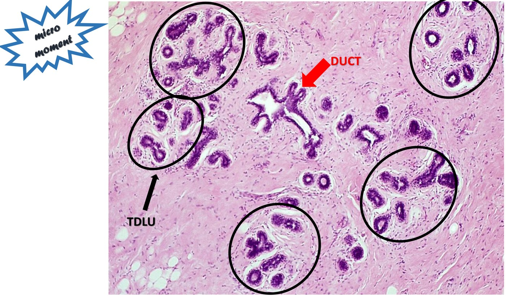
Low power. The circled clusters are TDLUs, draining into the duct (arrow). Her analogy: the TDLUs are grapes, the duct is the stem. In three dimensions each TDLU connects to that duct — a single 2D section rarely captures the join.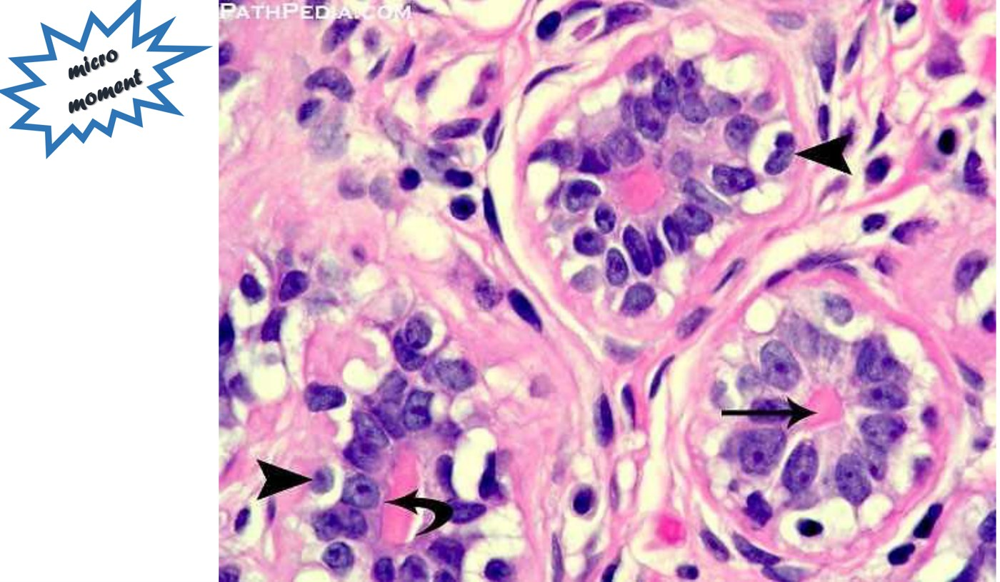
High power — the three layers that define everything. A central lumen; an inner epithelial layer (the milk-secreting cells); an outer myoepithelial layer, recognisable by its abundant clear cytoplasm; and a basement membrane in bubblegum pink.It is the inner epithelial cells that undergo malignant change.
If they turn malignant but stay surrounded by an intact myoepithelial layer and basement membrane → carcinoma in situ.
If they break through that myoepithelial layer and basement membrane → invasive carcinoma.
She labels this slide "not exam material" — but it is the reason the in situ / invasive split exists, and the reason a pathologist can settle the question with an immunohistochemical stain for the myoepithelial layer.
How Breast Disease Presents, and How It Is Sampled
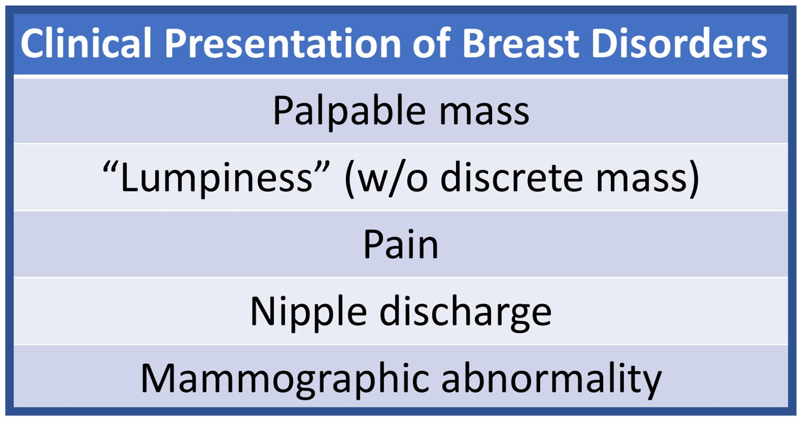
Five ways, and that's it. Her ranking from a pathologist's bench: a discrete palpable mass and generalised lumpiness are common, pain is rare, nipple discharge uncommon — and a mammographic abnormality in a woman with no symptoms at all is very common in our setting. The clinical approach to the first four is 5.7.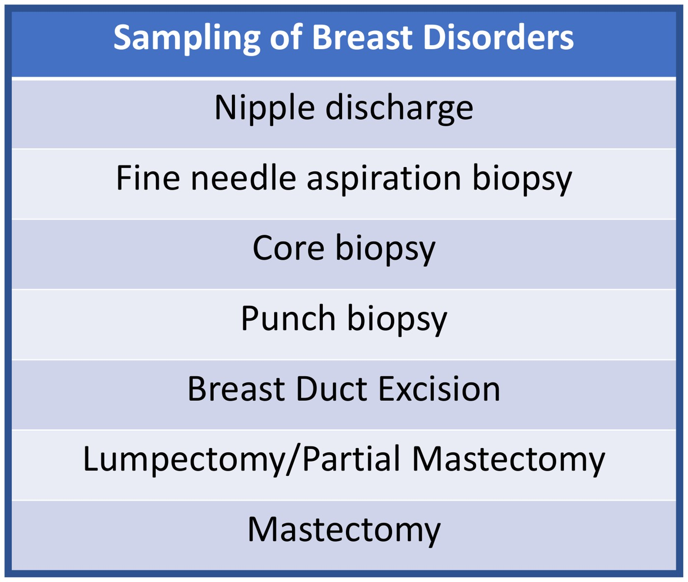
Roughly least to most invasive. Nipple discharge smeared on a slide has a low diagnostic yield. Core needle biopsy is the workhorse here, usually image-guided. Punch biopsy is for skin changes. Lumpectomy and mastectomy almost always follow a prior diagnostic needle biopsy rather than replacing it.Selected Benign Breast Disorders
One representative lesion from each compartment of the diagram. Two of them mimic cancer closely enough to get biopsied.
Fat Necrosis — Interlobular Stroma
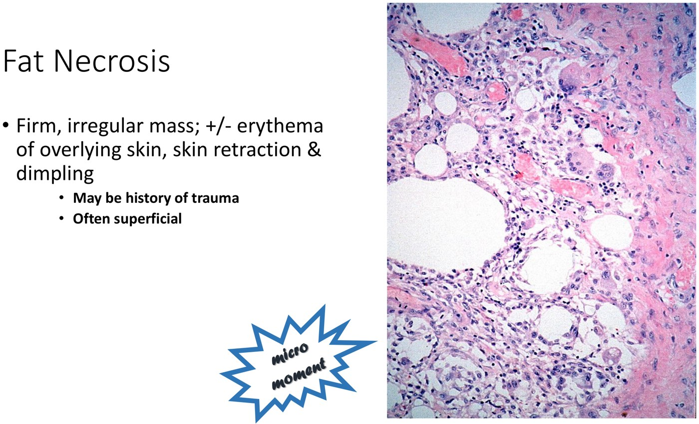
The benign lesion that looks most like cancer. Firm, irregular mass, sometimes with erythema, skin retraction or dimpling. Microscopically: necrotic fat spaces ringed by histiocytes — including multinucleated ones — lymphocytes and plasma cells.Two things point away from cancer: the mass is often superficial (where the breast is most exposed to trauma), and there may be a history of trauma. But neither is reliable — patients often cannot recall an injury, or never had a memorable one. Because the clinical findings mimic malignancy so closely, fat necrosis is usually biopsied.
Acute Mastitis — Nipple and Skin
| When | Most occur during lactation, particularly early on while parent and baby are still perfecting technique |
| Why | Breastfeeding causes small fissures in the nipple skin, which predispose to infection; early on there is also incomplete drainage and engorgement. The two together do it |
| Organisms | Staphylococcus or Streptococcus species |
| Presentation | A tense, hot, painful breast, sometimes with enlarged tender axillary nodes |
| Treatment | Antibiotics, skin care, and continuing to drain the breast — by continued feeding or pumping — to relieve the engorgement |
| If it fails | Progression to abscess, which needs drainage. Healing by fibrosis can then cause skin fixation that mimics cancer |
There is no microscopic image here because acute mastitis is a clinical diagnosis made on the history and appearance — it is not generally biopsied. The lecture's clinical photograph of an inflamed breast is left off this page; the findings are written out above. The clinical management is in 5.7.
"Diffusely red, swollen breast in a lactating woman" is mastitis. But inflammatory carcinoma is defined by looking exactly like this — see Part 3. A breast infection that does not settle on antibiotics is not a treatment failure to shrug at.
Intraductal Papilloma — Large Ducts and Sinuses
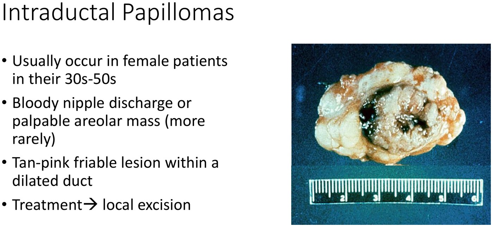
A dilated duct filled by tan, friable tumour and blood (the black material). Patients are typically 30s to 50s, and the classic presentation is bloody nipple discharge — less commonly a palpable subareolar mass.Papillomas are usually benign, but they are usually excised anyway, for two reasons: they may harbour atypia or malignancy within them, and the patient is often symptomatic. Note that a papilloma sits in the proliferative-without-atypia risk tier below.
Fibroadenoma — Intralobular Stroma
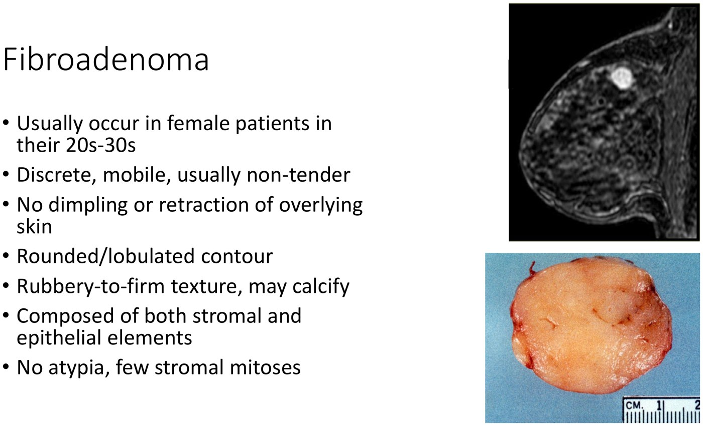
One of the commonest breast tumours. Everything about it is reassuring: discrete, mobile, non-tender, no skin change, rounded or lobulated contour, rubbery. If imaging and biopsy are concordant, these are often just followed rather than removed.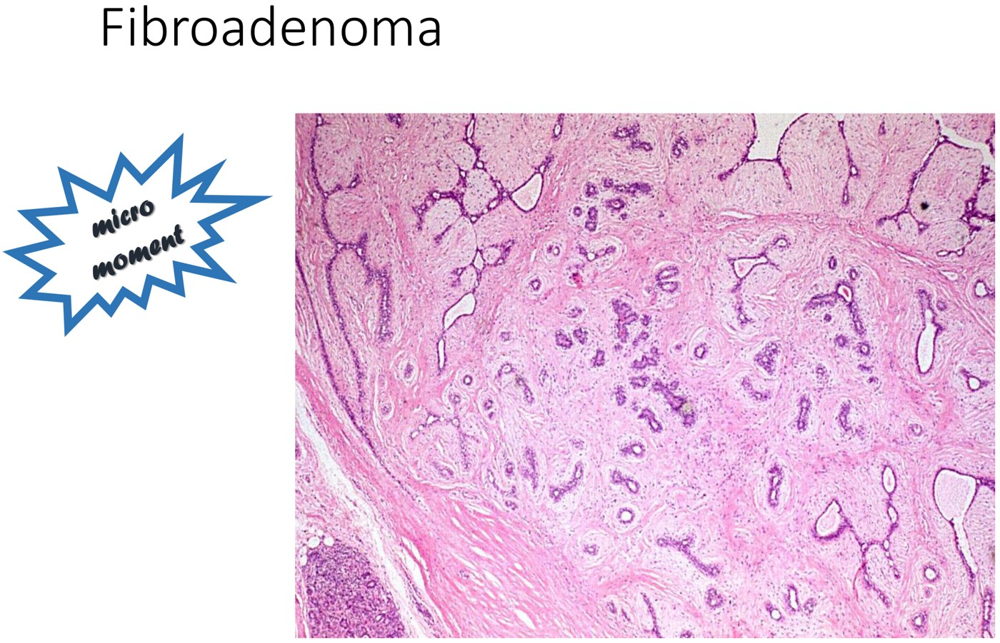
Two components, both benign. Bland spindled stroma plus compressed ducts with slit-like lumens. The pathologist scrutinises the stromal half: absent atypia and a low mitotic rate are what separate this from its aggressive counterpart.She deliberately does not teach it, but wants the term in your head: phyllodes tumour is the more aggressive counterpart of a fibroadenoma. It is why the stroma gets the careful look. (It also appears on the high-risk screening list in 5.7.)
Note also that fibroadenoma is filed under intralobular stroma on the diagram but is not purely stromal — it has an epithelial component, which is why it also appears in the epithelial risk table below.
Fibrocystic Change — TDLU
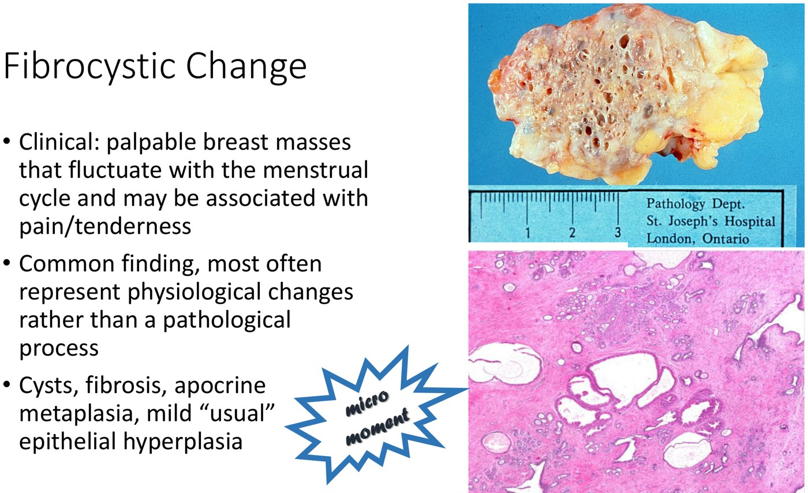
"Lumpy, bumpy breasts" — generalised palpable lumpiness rather than a discrete mass, fluctuating with the menstrual cycle. Gross: numerous cysts with intervening fibrosis. Micro: cystic spaces lined by strongly pink apocrine cells.The name changed for a reason. The historical term was fibrocystic disease; it is now fibrocystic change, because this is a physiological process, not a pathological one. It is excised only when imaging is concerning, a prior biopsy was equivocal, or it turns up incidentally in a specimen taken for something else.
The Risk Framework for Epithelial Lesions
A second framework, and this one is not anatomical. Any lesion with an epithelial component, from any site, sorts into one of three tiers by how much it raises the risk of a future invasive carcinoma.
![Slide table titled Epithelial Breast Lesions and Risk of Developing Invasive Carcinoma with three columns: non-proliferative lesions with relative risk of malignancy times one, listing fibrocystic change, duct ectasia, cysts, apocrine change and fibroadenoma; proliferative lesions without atypia with relative risk times 1.5 to 2, listing moderate or florid epithelial hyperplasia, papillomas, sclerosing adenosis, radial scar or complex sclerosing lesion and complex fibroadenoma; and atypical hyperplasias with relative risk times 4 to 5, or times 9 to 10 with family history plus atypical hyperplasia, listing atypical ductal hyperplasia and atypical lobular hyperplasia.](../../../../assets/images/week-5/breast-pathology/epithelial-risk-table.jpg) Three tiers, three numbers. Non-proliferative ×1 — the same risk as the general population. Proliferative without atypia ×1.5–2. Atypical hyperplasia ×4–5, rising to ×9–10 when a family history is added. Note where the earlier lesions land: fibrocystic change and fibroadenoma in tier 1, papilloma in tier 2.
Three tiers, three numbers. Non-proliferative ×1 — the same risk as the general population. Proliferative without atypia ×1.5–2. Atypical hyperplasia ×4–5, rising to ×9–10 when a family history is added. Note where the earlier lesions land: fibrocystic change and fibroadenoma in tier 1, papilloma in tier 2.
ADH and ALH are not frankly malignant. But they confer a substantially greater future risk, and ADH in particular sits closest to being a precursor of DCIS and invasive carcinoma. Both also appear as an indication for annual high-risk screening in 5.7 — the pathology report changes the screening plan.
Breast Cancer
Epidemiology, heredity, classification and prognosis. Carcinoma arises in the TDLU.
Epidemiology and Risk Factors
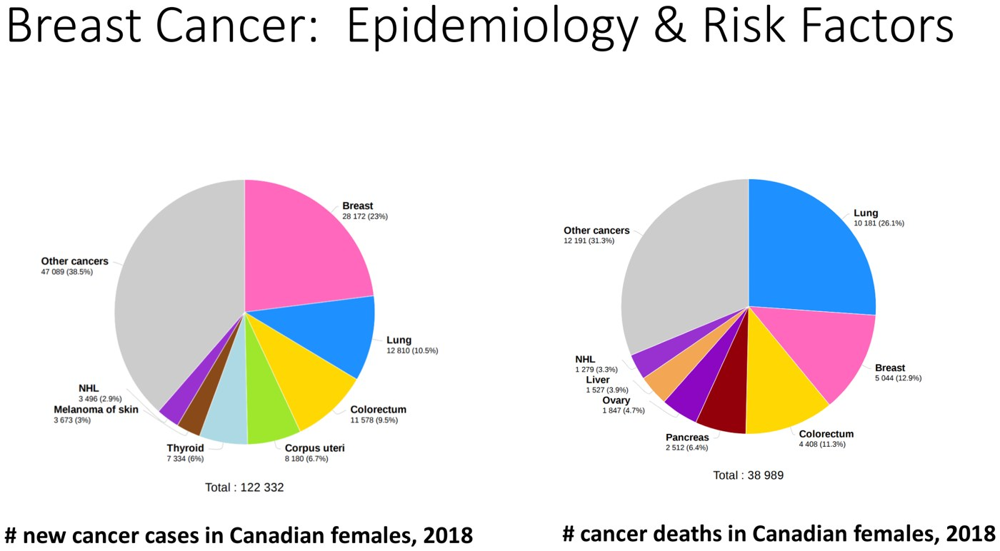
Number one for incidence, number two for death. In Canada, breast cancer is the most commonly diagnosed cancer in female patients and the second leading cause of cancer death — lung holds the first place for deaths.| Risk factor | Detail |
|---|---|
| Sex | Female > male |
| Age | 75% occur in the 50+ age group |
| Family history | 80% sporadic, 20% non-sporadic — expanded below |
| Geography | Americas and Europe > Asia and Africa |
| Race and ancestry | Highest incidence in women of European descent (and more ER-positive cancers in this group). Women of Hispanic or African ancestry have lower incidence but a higher risk of aggressive cancers at younger ages |
| Reproductive history | Early menarche, nulliparity, no breastfeeding, older age at first pregnancy |
| Ionizing radiation | Especially if exposure occurs while the breast is still developing |
| Others | Obesity · HRT · mammographic density · alcohol |
The radiation one has a classic case attached: a young person irradiated to the mediastinum for Hodgkin lymphoma, who develops breast cancer years later. The developing breast is what makes it matter.
On race and ancestry, she is explicit: some of the difference may be genetic, but the rest reflects access to care and the broader social determinants of health, including racism. The category is not a biological explanation on its own.
Hereditary and Familial Breast Cancer
![Slide flowchart titled Hereditary and Familial Breast Cancer splitting breast cancer into sporadic 80 percent and non-sporadic 20 percent; the non-sporadic branch divides into hereditary breast cancer with high penetrance mutations 5 to 7 percent listing familial breast and ovarian cancer BRCA1 and BRCA2, Li-Fraumeni p53, Cowden syndrome PTEN and Peutz-Jeghers STK11; hereditary breast cancer with moderate penetrance mutations under 3 percent listing CHEK2 and ataxia telangiectasia ATM; and familial breast cancer of polygenic or unknown genetic basis. A definition box defines penetrance as the proportion of individuals carrying a particular variation of a gene that also express an associated phenotype.](../../../../assets/images/week-5/breast-pathology/hereditary-tree.jpg) Read it left to right. 80% sporadic. Of the 20% non-sporadic, roughly half are explained by identifiable high-penetrance (5–7%) or moderate-penetrance (<3%) variants; the remainder is polygenic — combinations of low-penetrance variants, many still uncharacterised, and probably quite common in the population.
Read it left to right. 80% sporadic. Of the 20% non-sporadic, roughly half are explained by identifiable high-penetrance (5–7%) or moderate-penetrance (<3%) variants; the remainder is polygenic — combinations of low-penetrance variants, many still uncharacterised, and probably quite common in the population.
Penetrance, as defined on the slide: the proportion of individuals carrying a particular variation of a gene who also express the associated phenotype. Beyond BRCA1/2, note the syndromes: Li-Fraumeni (p53), Cowden (PTEN), Peutz-Jeghers (STK11), and the moderate-penetrance CHEK2 and ATM. Who gets referred for genetic testing is covered in 5.7; the prenatal-genetics counterpart is 4.16.
Classification: In Situ Carcinoma
Carcinoma which is (i) confined to ducts and lobules by an intact myoepithelial cell layer and (ii) which has not penetrated the basement membrane.
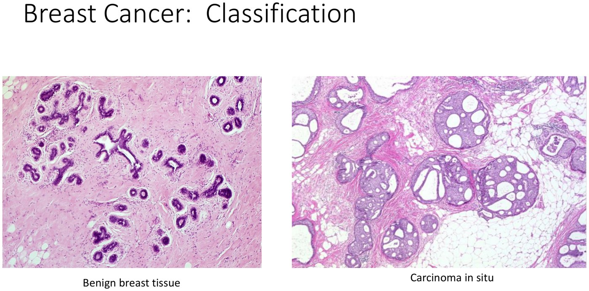
Same architecture, filled in. The acini and ducts are expanded by a proliferation of malignant cells, but the periphery is smooth and the myoepithelial layer and basement membrane are intact — so they are not invading the surrounding tissue. At low power she describes them as looking like cannonballs.![Slide table comparing DCIS and LCIS on three rows. Presentation: DCIS often shows linear, casting or pleomorphic calcifications on mammography and sometimes nipple discharge; LCIS is usually found incidentally on a biopsy performed for another reason with no good clinical, anatomical or mammographic correlate. Clinical management: DCIS complete excision with negative margins; LCIS close clinical follow-up. Invasive cancer risk: DCIS precursor for invasive cancer; LCIS risk factor, a non-obligate precursor, for invasive cancer.](../../../../assets/images/week-5/breast-pathology/dcis-vs-lcis.jpg) The table to know cold. The difference that matters clinically is not microscopic — it is how each presents, how each is managed, and what each means for future invasive cancer.
The table to know cold. The difference that matters clinically is not microscopic — it is how each presents, how each is managed, and what each means for future invasive cancer.
It would be logical to assume DCIS lives only in ducts and LCIS only in lobules. Not so. DCIS is usually ductal but can extend into lobules; LCIS is usually lobular but can involve ducts. The real distinction is cellular morphology and immunohistochemistry — which she explicitly says is not what undergraduates need.
| After a diagnosis of classic LCIS, the risk of subsequent invasive carcinoma is… | |
|---|---|
| Ipsilateral breast | 15–20% |
| Contralateral breast | 10–15% |
That is the whole point of calling LCIS a risk marker rather than a precursor: the risk is in both breasts, not just the one that was biopsied. Which is also why excising it would not accomplish much, and why management is close follow-up — provided the radiology correlates.
Classification: Invasive Carcinoma
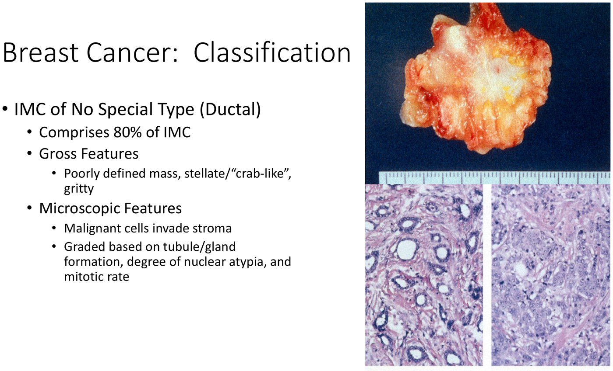
80% of invasive breast cancer. Also called infiltrating ductal carcinoma, the older term. Grossly poorly defined, stellate or "crab-like", firm and gritty to a gloved finger. Grade is assigned on how closely it resembles normal breast: gland formation, nuclear atypia and mitotic rate.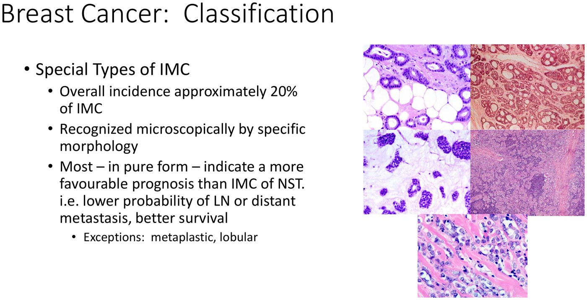
The remaining 20%, each with a characteristic look: tubular, cribriform, mucinous, medullary, papillary, lobular, metaplastic. You are not expected to recognise the patterns. You are expected to know that pure special types generally do better — with two exceptions.Metaplastic carcinoma has a worse prognosis than no special type. Lobular carcinoma is generally similar, and in some settings slightly worse. Those two buck the "special types do better" trend, and that is the examinable part.
Two Distinctive Clinicopathological Manifestations
Paget's disease of the nipple
| Clinically | Reddening of the nipple and areola, scaling, eczematous change, erosion or even ulceration |
| What it signals | Invariably associated with an underlying carcinoma — either DCIS or invasive. If there is a palpable mass, it is usually invasive |
| Microscopically | Carcinoma cells scattered within the squamous epithelium, recognisable by their large clear halos and nuclear atypia |
| Surgery | Often needs a wide resection, because disease can extend extensively through the duct system |
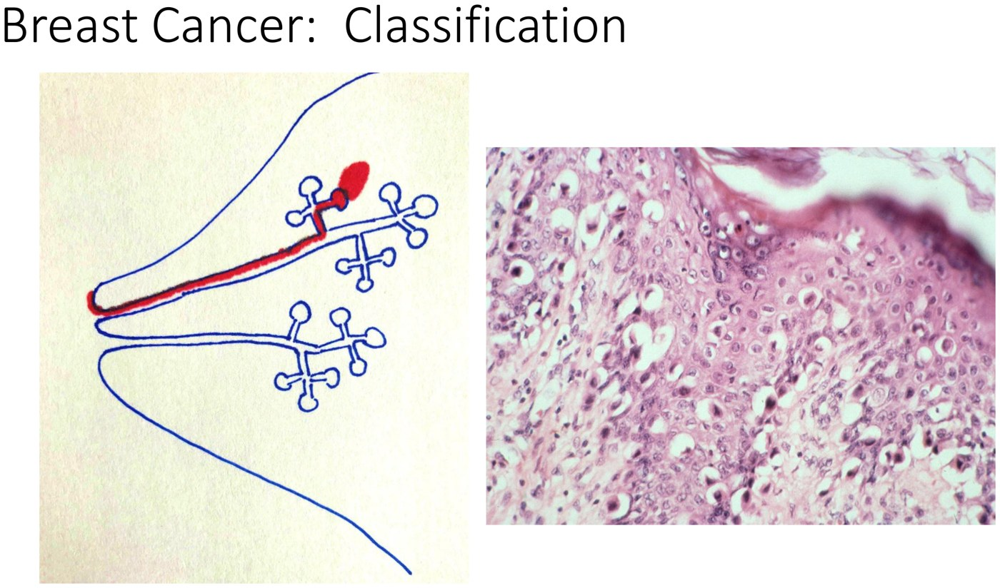
Her own schematic, and it explains the disease. Carcinoma deep in the breast sends cells up the lactiferous ducts and sinuses into the nipple skin — which is what produces the eczema-like appearance. A nipple skin biopsy makes the diagnosis. The lecture's clinical photographs are left off this page.Inflammatory carcinoma
Inflammatory carcinoma means a clinical appearance resembling diffuse acute mastitis — a diffusely red, swollen breast.
Peau d'orange (French for "skin of an orange" — dimpling of the skin) often but not always accompanies it. Peau d'orange without the acute-mastitis appearance is NOT inflammatory carcinoma.
The pathological correlate is obstruction of the dermal lymphatics by tumour — clusters of tumour sitting in dermal lymphatic spaces on a skin biopsy. But dermal lymphatic obstruction without the clinical appearance is NOT inflammatory carcinoma either.
You need both. The clinical picture is not optional evidence — it is part of the definition.
Why it matters: inflammatory carcinoma is by definition T4 disease — advanced — and carries a poor prognosis. It is also practically diagnosable fast: a patient presenting with those skin changes can have a punch biopsy in the family doctor's office or the emergency department, and the pathologist can report tumour in the dermal lymphatics quickly enough to get the referral moving.
Behaviour and Prognosis
| Major prognostic factors | Detail |
|---|---|
| Invasive vs in situ | Invasive does worse |
| Distant metastases | Usual sites: lung, pleura, liver, bone. Other sites: adrenal, brain |
| Lymph node metastases | In the absence of distant metastases, axillary lymph node status is the single most important prognostic factor in invasive carcinoma |
| Tumour size | Larger is worse; a major component of staging |
| Local extension | Deep → fixation to pectoralis muscle. Superficial → skin fixation, nipple retraction, ulceration, peau d'orange |
| Inflammatory breast cancer | Poor prognosis, as above |
| Minor prognostic factors | How they are obtained |
|---|---|
| Histologic subtype · histologic grade · lymphovascular space invasion | "Old fashioned" light microscopy — examination of an H&E stain |
| Estrogen and progesterone receptors · HER2/neu | Special tests — immunohistochemistry, with in situ hybridisation sometimes needed to resolve HER2 |
| Selected cases: gene expression profiling, proliferative rate, PD-L1 | Special tests |
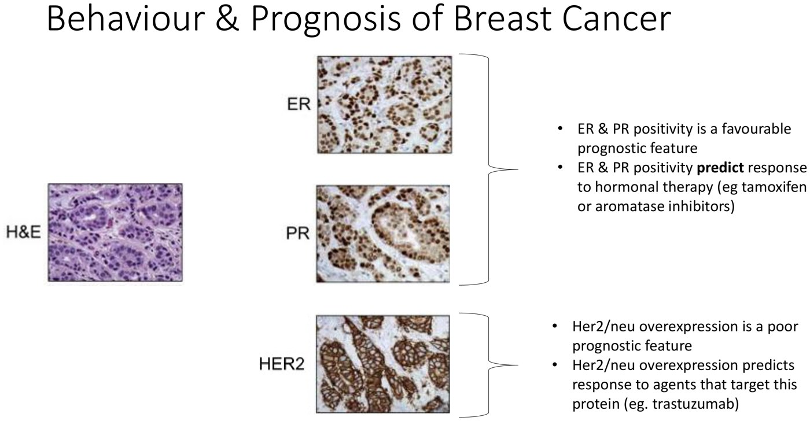
A triple-positive tumour. Diagnosis is made on the H&E first, then reflexed to ER, PR and HER2 immunohistochemistry.ER/PR positive is favourable prognostically and predicts benefit from endocrine therapy — tamoxifen or an aromatase inhibitor (the pharmacology is in 4.4).
HER2 positive pulls the two apart. It is a poor prognostic feature — more aggressive disease — but it predicts response to trastuzumab (Herceptin). A bad marker to have and a good one to be able to treat. That distinction is exactly why the pathologist reports both.
Summary
| Benign and malignant breast lesions arise in different anatomical areas of the breast — the framework diagram |
| Fat necrosis closely mimics cancer clinically |
| Acute mastitis typically occurs in the setting of lactation |
| Intraductal papillomas present with bloody nipple discharge and are treated by excision |
| Fibroadenoma is one of the most common benign breast lesions |
| Fibrocystic change is a physiological process that fluctuates with the menstrual cycle |
| Epithelial lesions sort into non-proliferative · proliferative without atypia · proliferative with atypia, each with its own relative risk |
| DCIS and LCIS differ in presentation, treatment and relationship to invasive cancer |
| Invasive cancers are no special type (80%) vs special type (20%) |
| The two special clinicopathological manifestations are Paget's disease and inflammatory carcinoma |
| Prognostic factors include ER, PR and HER2/neu status |
Built from Dr. Cady Zeeman-Pocrnich's "Pathology of the Breast" module — three recorded parts (7.5, 13 and 23 min) and their slide deck. All figures are slides from that deck, which credits its anatomical diagram to Breast Cancer Res 2005;7:171–179. Slides built around clinical photographs of patients' breasts — the inflamed breast in acute mastitis, the nipple in Paget's disease, and the two inflammatory-carcinoma photographs — are left off this page under the site's clinical-photo policy, and their findings are written out in text instead. The transcript is a cleaner one than most on this site but still garbled the vocabulary heavily: TDLU as "TDL use", "TDO" and "TD blues", lactiferous as "Lactifluus", acini as "assignee" and "assonance", phyllodes as "Floyd's tumour", fibrocystic as "fibrosis stick", adenopathy as "added apathy", peau d'orange as "powder orange", areola as "Ariela", atypia as "ATP" and "nuclear utopia", LCIS as "LKS", cribriform as "crib reform", axillary as "auxiliary", lymphovascular as "lymphoid vascular", and HER2/neu as "Her2 new" — so every term and number here was taken from the slides. The clinical approach to these presentations is 5.7.